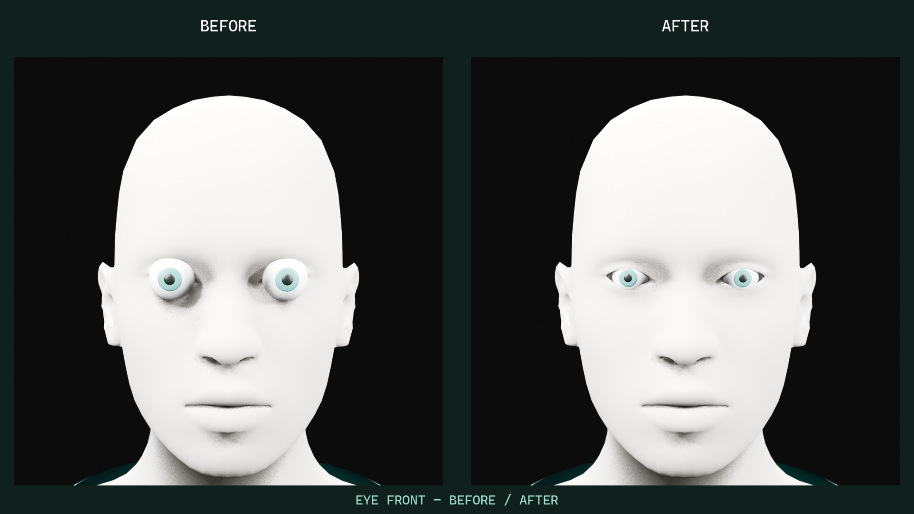
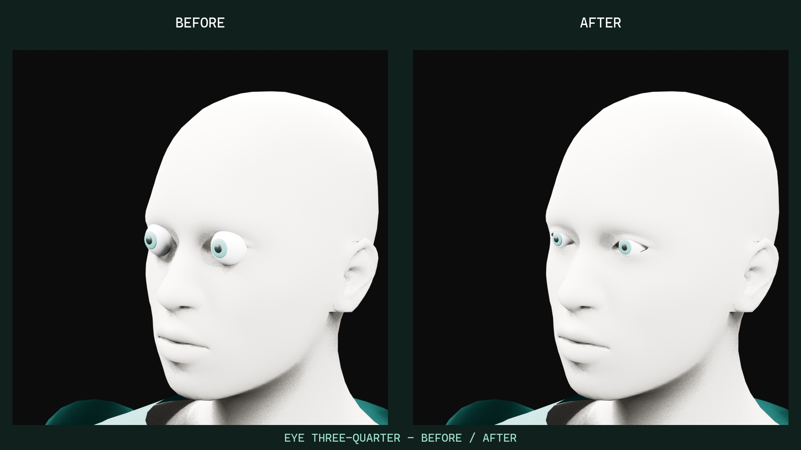
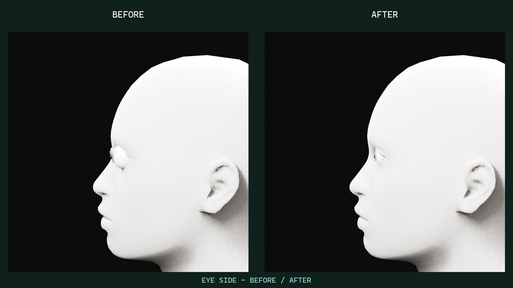
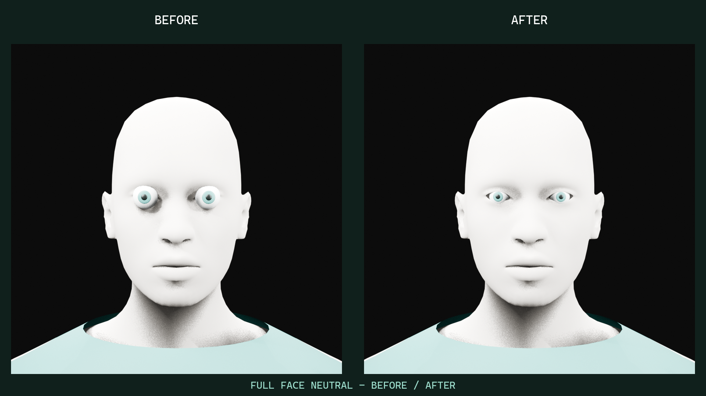
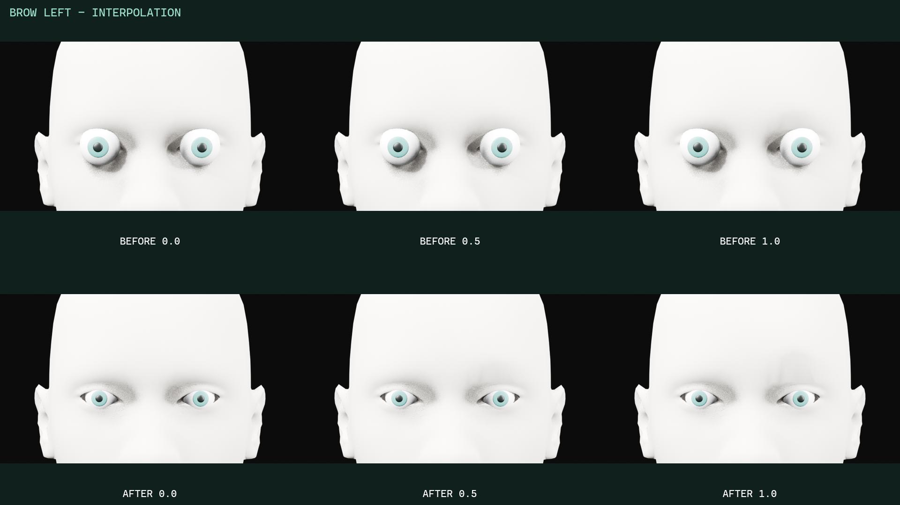
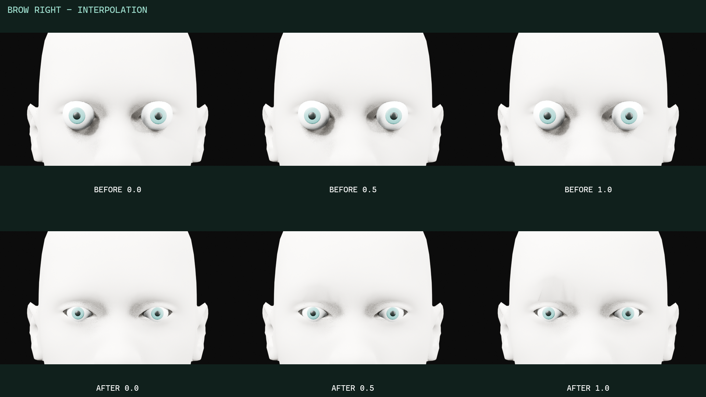
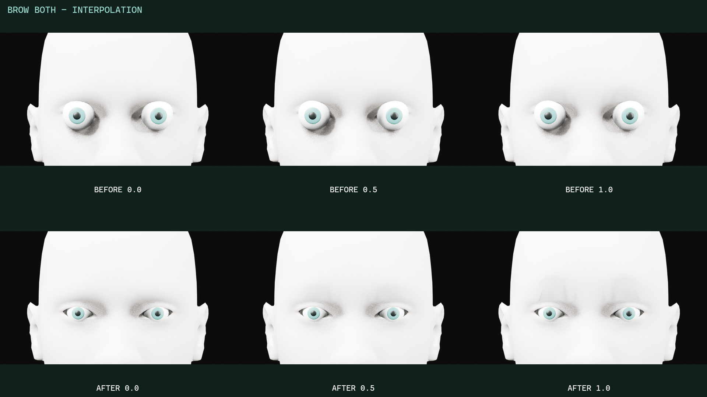
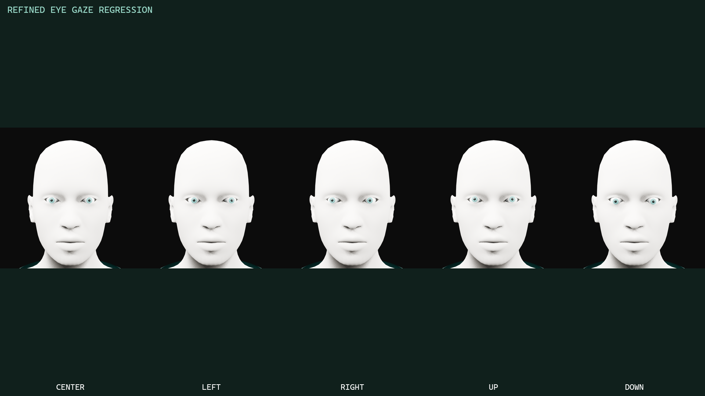
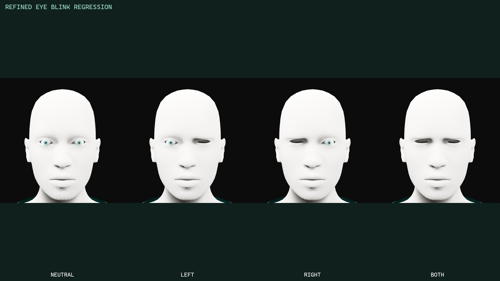
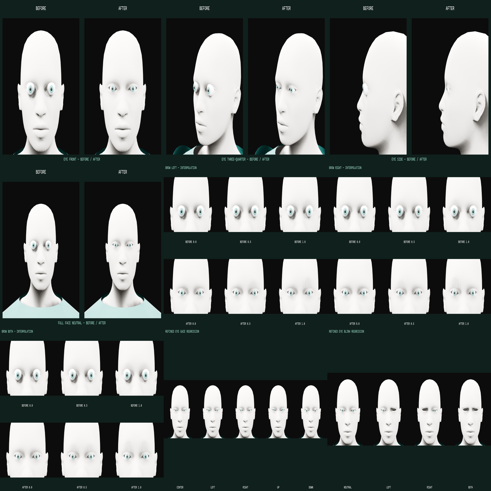

TASK-0007A · OWNER VISUAL REVIEW
Focused Facial Refinement
TECHNICAL FACIAL TEST — NOT VERIFIED SIGN LANGUAGE
Eyes được thu nhỏ/lùi vào socket và brow targets được tăng readability. Owner acceptance vẫn NOT YET TESTED.
Demo videos
Before / after & regression




















Known limitations
Blink vẫn dùng companion eye morph vì eyelid topology hiện tại. Đây là technical prototype; chưa xác nhận VSL hoặc production quality.